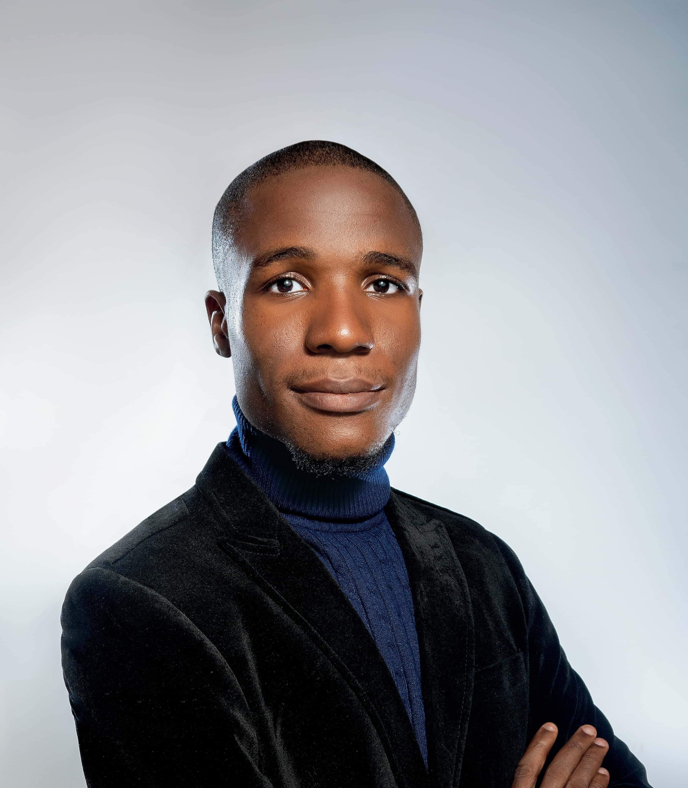

Chidiebere Onyebuchukwu | WDD 130
Behind The Words
Growing up, I always loved connecting with people on social media and expressing myself through writing; as such, I have tried my hands at different things, in search of what I am passionate about. After my secondary school education, I enrolled in the prestigious Federal University of Technology Owerri and started studying optometry; not too long, I realized that being an eye doctor was not my calling; I started exploring other opportunities, and that was when I came across digital marketing, I have since then taken many courses and completed several internships that have provided me with the skills, experience, and confidence I need to work as a digital marketer. I never knew the skills I was learning would make me a digital marketer, but thank goodness I learned and practiced them. These days, I’m fortunate to have translated this ability into a successful career.I always strive to learn and develop my communication skills, approaching every challenge I encounter as an experience to grow and develop as a writer. My name is Chidi Onyebuchukwu, and to find out more about me or to discuss a potential project, please don’t hesitate to contact me.